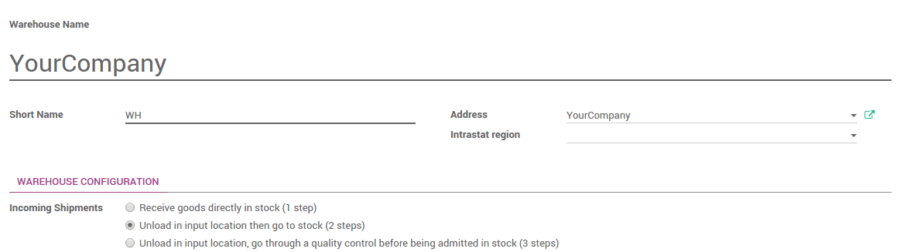

Overview
Odoo uses routes to define exactly how you will handle the different receipt steps. The configuration is done at the level of the warehouse. By default, the reception is a one step process, but changing the configuration can allow to have 2 or even 3 steps.
The 2 steps flow is the following : You receive the goods in an input area then transfer them from input area to your stock. As long as the goods are not transferred in your stock, they will not be available for further processing.
This is the case that will be explained in this document.
Configuration
Use advanced routes
To allow management of routes, go to the menu
Ensure that the routes option Advance routing of product using rules is checked, then click on Apply to save changes.
Make sure that "Manage several locations per warehouse" is also ticked.
How to configure your warehouse ?
Go to the the menu and choose the warehouse where you want to change reception methods.
By default, warehouses are configured with one step reception (option Receive goods directly into stock).
To add the control step, tick Unload in input location then go to stock (2 steps).
How to receipt a shipment in 2 steps?
How to process the Receipt step ?
- In the purchase module, create a Request for Quotation, then click on the Confirm order button. You can see that there is one Shipment related to purchase order in the stat button above the purchase order form view. This is the receipt step.

- Go to Inventory and click on the # TO RECEIVE link on the Receipts card.

Click on the receipt that you want to process, then click on Validate to complete the move from the Vendor to WH/Input.
This has completed the Receipt Step and the move refered with WH/IN. The product has been moved from the Vendor to the WH/Input location, which makes the product available for the next step.
How to to transfer the receipt to your stock ?
Go back to the Inventory dashboard. The waiting transfer is now ready. Click on the # TRANSFERS in the Internal Transfers to process the quality control.

Click on the picking you want to process. Click on Validate to complete the move from WH/Input to WH/Stock.
This has completed the internal transfer step and the move refered with WH/INT. The receipt has been moved to your stock.